GOV07 — EPF/PF Balance Check aur Withdrawal Kaise Karein?
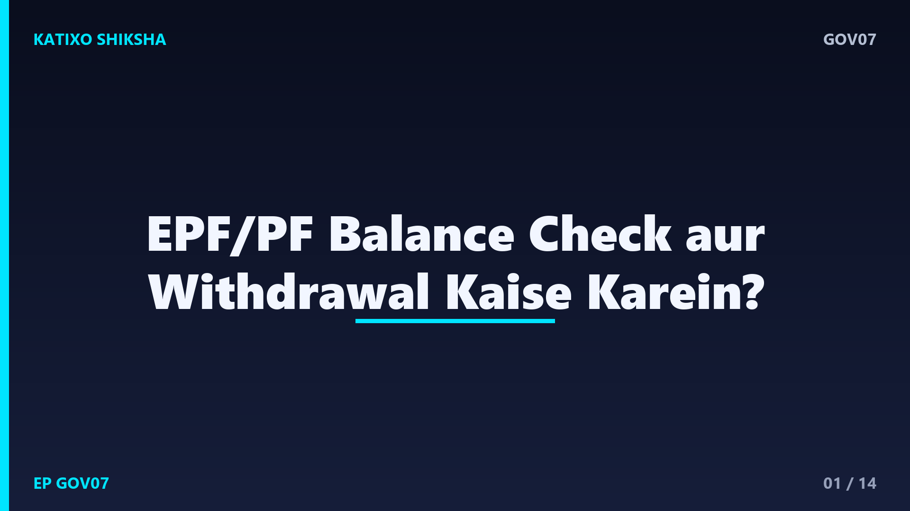
Slide 1दोस्तों, हर महीने आपकी salary से PF कटता है, और कई सालों में ये एक अच्छी-खासी रकम बन जाती है। पर जब ज़रूरत पड़ती है, तो ज़्यादातर लोगों को पता ही नहीं होता कि अपना PF balance कैसे देखें या पैसा कैसे निकालें। बहुत लोग किसी agent को बीच में डालकर पैसे और टाइम दोनों बर्बाद करते हैं। नमस्ते, आपका स्वागत है Katixo KhojLab में। आज हम बहुत आसान Hinglish में समझेंगे कि EPFO के official portal पर PF balance कैसे check करें और withdrawal कैसे करें। चलिए शुरू करते हैं।
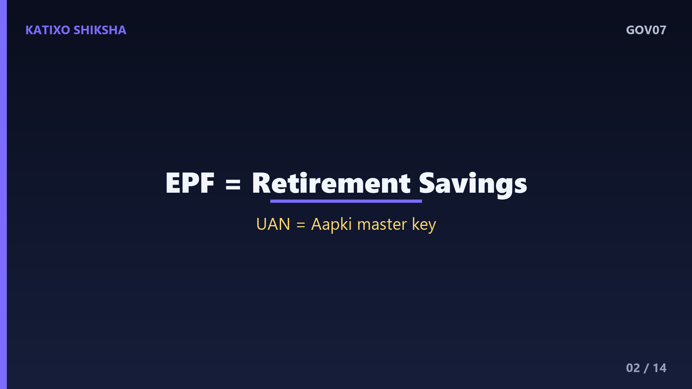
Slide 2सबसे पहले समझिए ये है क्या। EPF यानी Employees Provident Fund, एक retirement saving scheme है, जिसे EPFO यानी Employees Provident Fund Organisation चलाता है। हर महीने आपकी salary का एक हिस्सा PF में जमा होता है, और उतना ही हिस्सा आपका employer भी डालता है, और इस पर सरकार ब्याज भी देती है। दोस्तों, इस पूरे account को manage करने के लिए आपको एक नंबर मिलता है जिसे UAN कहते हैं, यानी Universal Account Number, जो आपकी PF की मास्टर key है।
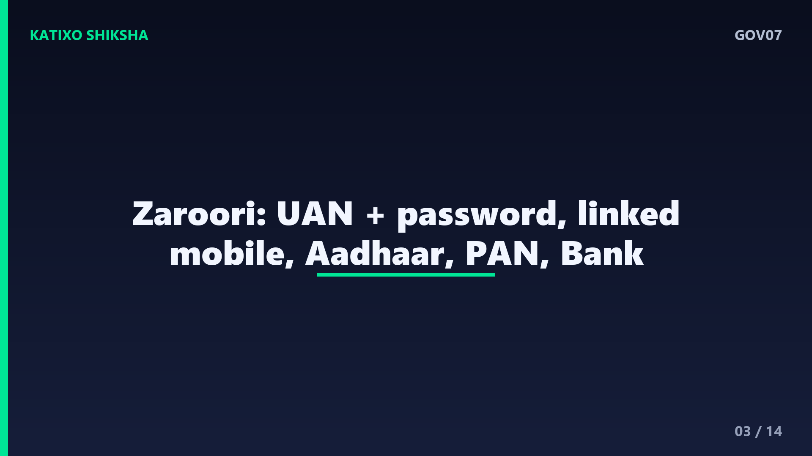
Slide 3अब काम शुरू करने से पहले documents और details तैयार कर लीजिए। सबसे ज़रूरी है आपका UAN और उसका password, और आपका UAN activated होना चाहिए। फिर आपका वो mobile number जो UAN से linked है, क्योंकि लगभग हर step पर OTP उसी पर आता है। साथ में आपका Aadhaar, PAN, और bank account की details चाहिए। दोस्तों, सबसे ज़रूरी बात, आपका UAN, Aadhaar, PAN और bank account, सब KYC में verified और आपस में linked होने चाहिए, वरना withdrawal में दिक्कत आती है।
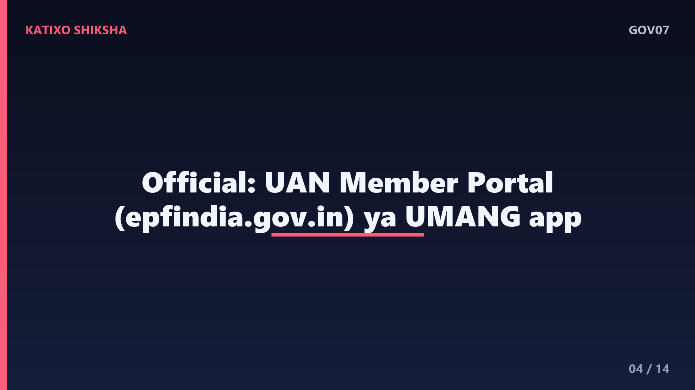
Slide 4अब जानिए काम कहाँ करना है। दोस्तों, PF का सारा काम EPFO के official portal पर होता है, जिसका address है epfindia.gov.in, और इसके अंदर member के लिए UAN member portal होता है। साथ ही EPFO का official mobile app, UMANG app के ज़रिए भी आप balance और claim देख सकते हैं। बहुत ज़रूरी बात, किसी भी fake website, अनजान link या agent को अपना UAN, password या OTP कभी ना दें। ये सीधे आपके पैसों से जुड़ा मामला है, इसलिए सिर्फ official portal ही इस्तेमाल करें।
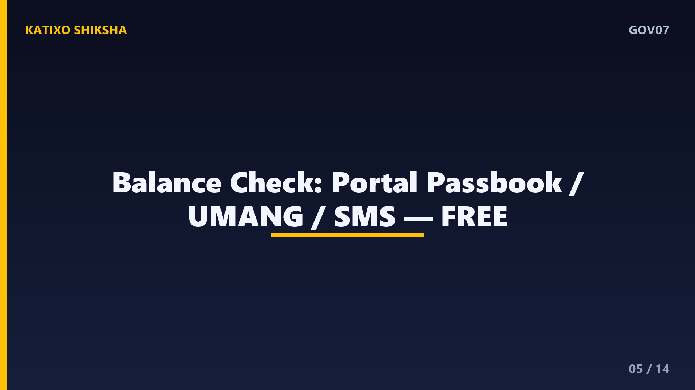
Slide 5अब पहले balance check करना सीखते हैं। पहला तरीका, UAN member portal पर अपने UAN और password से login करें, और passbook section में जाकर अपना पूरा PF balance और हर महीने का जमा देखें। दूसरा तरीका, UMANG app पर login करके भी passbook देख सकते हैं। और तीसरा, सबसे आसान, अगर आपका UAN, mobile से linked है, तो एक missed call या SMS service से भी आप balance की जानकारी पा सकते हैं। दोस्तों, balance check करना बिल्कुल free है और इसमें कोई fee नहीं लगती।
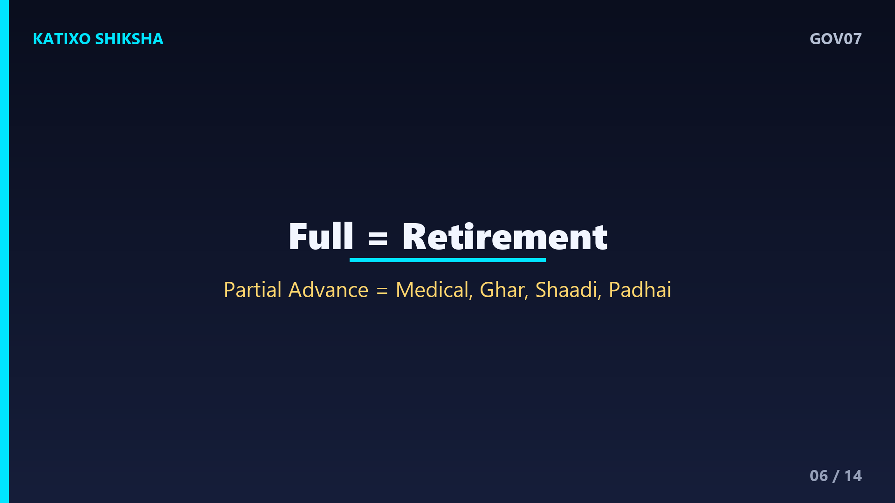
Slide 6अब withdrawal की तरफ बढ़ते हैं, पर पहले एक ज़रूरी बात। PF का पूरा पैसा आम तौर पर तभी निकलता है जब आप retire हों या लंबे समय तक बेरोज़गार हों। पर कुछ ज़रूरतों के लिए आप बीच में partial withdrawal यानी advance भी ले सकते हैं, जैसे medical emergency, घर, शादी या पढ़ाई। दोस्तों, हर category के अपने नियम और limits होती हैं, इसलिए claim करने से पहले ये समझना ज़रूरी है कि आप किस reason के तहत और कितना पैसा निकाल सकते हैं।
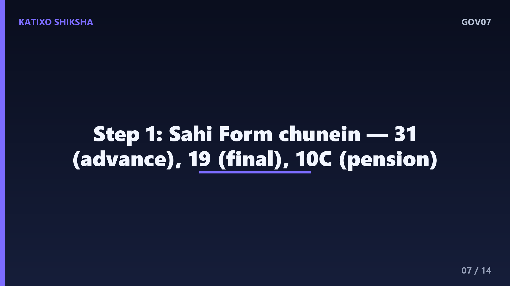
Slide 7अब withdrawal का पहला step, online claim। UAN member portal पर login करने के बाद Online Services menu में जाएँ, और वहाँ Claim का option चुनें, जिसमें Form 31, 19 और 10C जैसे form आते हैं। Form 31 advance यानी partial withdrawal के लिए, Form 19 पूरा PF final settlement के लिए, और Form 10C pension से जुड़े हिस्से के लिए होता है। दोस्तों, सही form चुनना बहुत ज़रूरी है, क्योंकि हर form का मकसद अलग है, और गलत form से claim reject हो सकता है।
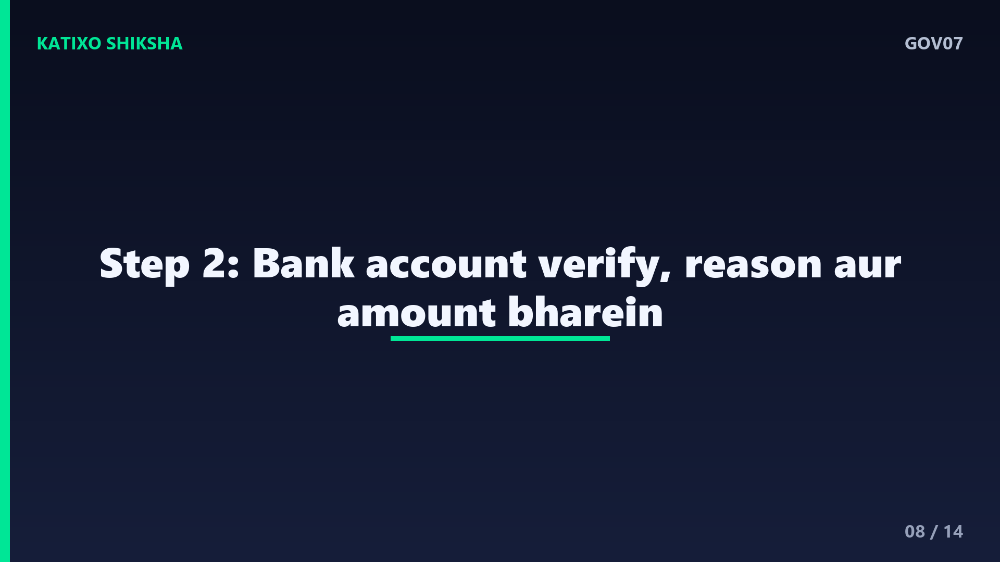
Slide 8दूसरा step, अपनी details verify करें। claim form में आपका bank account number दिखेगा, उसके आखिरी कुछ अंक डालकर verify करना होता है, ताकि पैसा सही account में जाए। फिर withdrawal का reason और amount भरें, जो आपकी category पर निर्भर करता है। दोस्तों, यहाँ सबसे ज़रूरी है कि आपका Aadhaar, UAN से linked और verified हो, और आपका KYC complete हो, क्योंकि इसके बिना online claim आगे नहीं बढ़ता और आपको employer से approval की ज़रूरत पड़ सकती है।
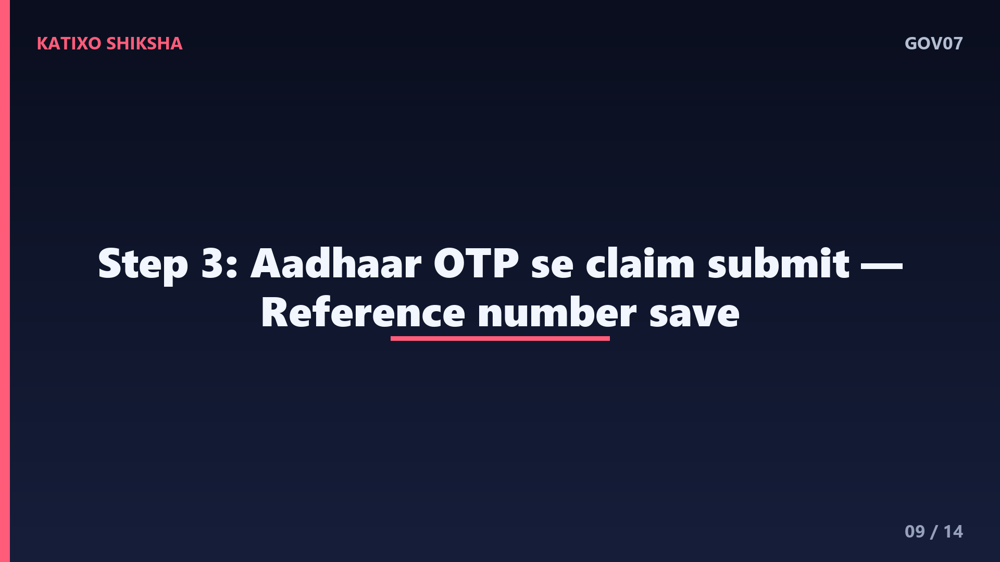
Slide 9तीसरा step, OTP से claim submit करना। सारी details सही भरने के बाद, आपके Aadhaar से linked mobile number पर एक OTP आता है। उस OTP को डालते ही आपका claim submit हो जाता है, और आपको एक reference number मिलता है। दोस्तों, इस reference number को संभाल कर रखें, क्योंकि इसी से आप अपने claim का status track कर सकते हैं। एक बार claim जमा होने के बाद वो EPFO के पास processing के लिए चला जाता है, और पूरी process online ही, बिना कागज़ के पूरी हो जाती है।
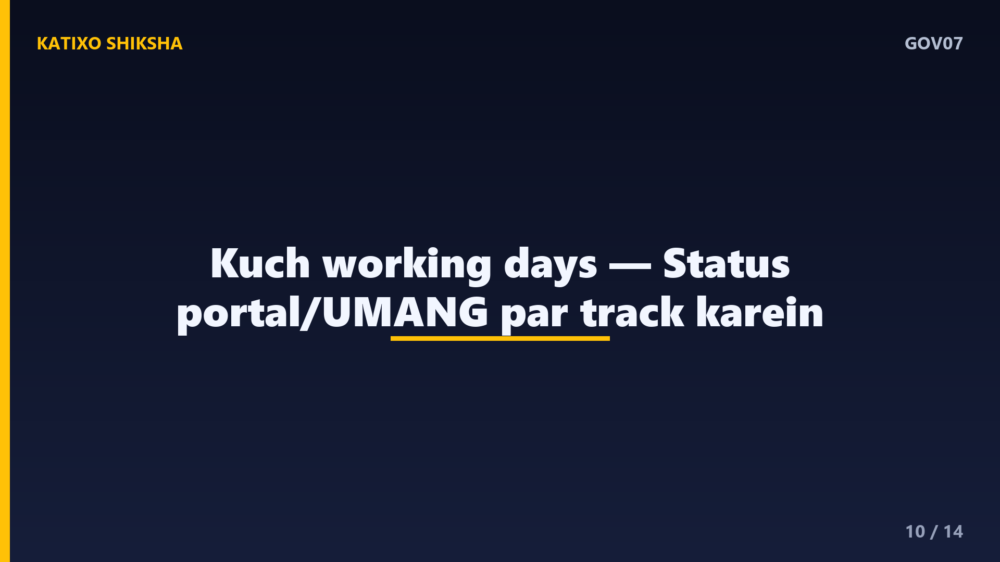
Slide 10अब timeline और status की बात। दोस्तों, claim submit होने के बाद approved होने और पैसा आपके bank account में आने में आम तौर पर कुछ working days लगते हैं। आप अपने claim का status UAN portal के Track Claim Status या UMANG app पर अपने reference number से देख सकते हैं। ध्यान रहे, अगर KYC अधूरी है या details mismatch हैं, तो claim reject या pending हो सकता है। ऐसी हालत में portal पर reason दिखता है, जिसे ठीक करके आप दोबारा apply कर सकते हैं।
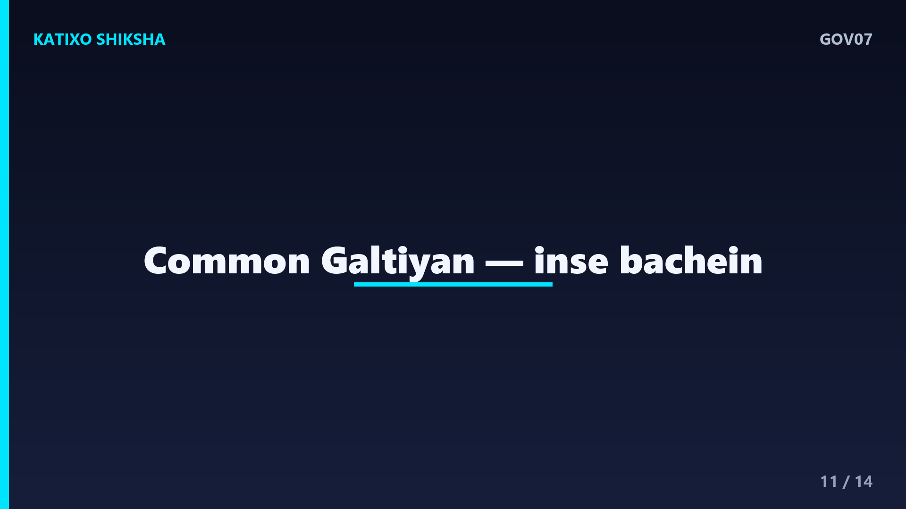
Slide 11अब common गलतियाँ जिनसे बचना है। पहली गलती, KYC अधूरी रखना, यानी Aadhaar, PAN या bank account UAN से link या verify ना होना। दूसरी, UAN से linked mobile number बदल जाना या बंद हो जाना, जिससे OTP ही नहीं आता। तीसरी, गलत claim form चुनना। चौथी, bank account के गलत अंक भरना, जिससे पैसा अटक जाता है। और पाँचवीं, किसी agent को UAN और OTP देना। दोस्तों, ये गलतियाँ आपके अपने पैसे निकालने में बड़ी रुकावट बन जाती हैं।
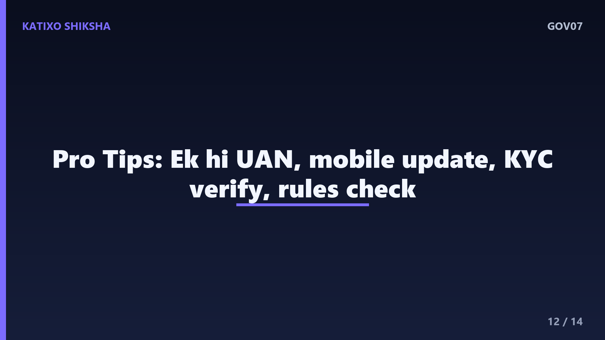
Slide 12कुछ काम की tips भी सुन लीजिए। Tip एक, नौकरी join करते ही अपना UAN activate कर लें और हमेशा एक ही UAN रखें, job बदलने पर नया मत बनवाएँ, बल्कि PF transfer करवाएँ। Tip दो, अपना mobile number UAN में हमेशा updated रखें। Tip तीन, claim से पहले KYC, यानी Aadhaar, PAN और bank, सब verified करवा लें। और Tip चार, हर बड़ी ज़रूरत से पहले balance और नियम check कर लें, ताकि सही form और सही amount चुन सकें।
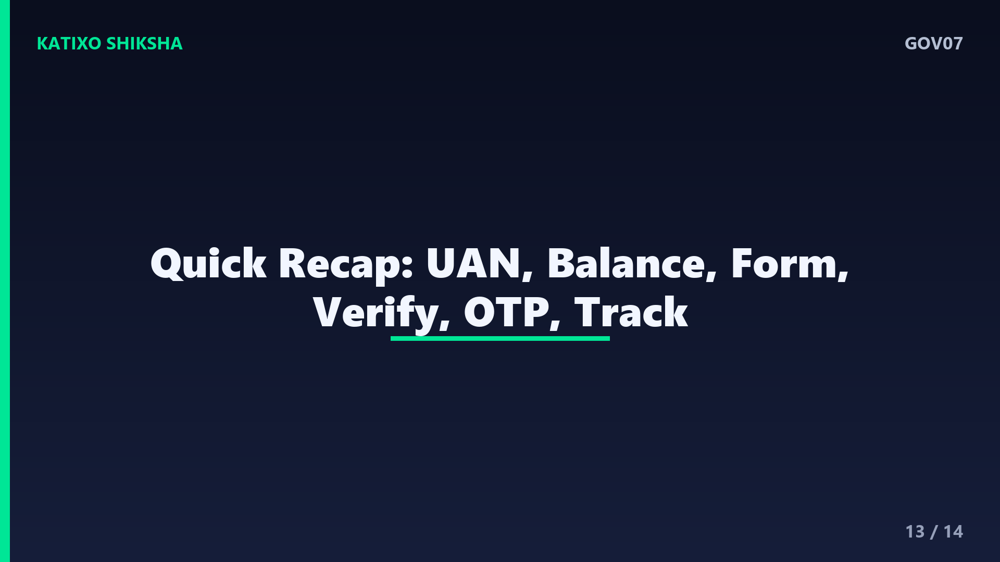
Slide 13अब एक quick recap कर लेते हैं। PF आपकी salary से कटने वाली retirement saving है, और UAN इसकी master key है। Balance आप UAN member portal, UMANG app, या SMS से free में देख सकते हैं। Withdrawal के लिए official portal पर login करके सही form चुनें, Form 31 advance के लिए और Form 19 final settlement के लिए। Bank details verify करें, Aadhaar OTP से claim submit करें, और reference number से status track करें। दोस्तों, KYC complete हो तो पूरी process online और आसान है।
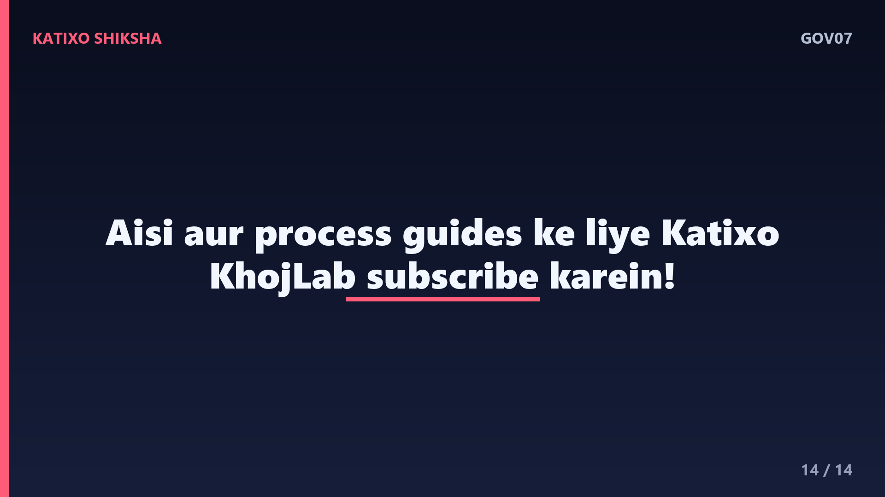
Slide 14तो दोस्तों, अब आप खुद, बिना किसी agent के, अपना PF balance देख सकते हैं और ज़रूरत पड़ने पर withdrawal कर सकते हैं। बस अपना KYC complete रखें, official portal इस्तेमाल करें, और UAN, password या OTP किसी को भी कभी ना दें। अगर ये guide काम आई, तो ऐसी और काम की सरकारी process guides के लिए Katixo KhojLab subscribe करें और bell icon ज़रूर दबाएँ। एक ज़रूरी disclaimer, process और नियम समय के साथ बदल सकते हैं, इसलिए claim करने से पहले official website ज़रूर check करें। मिलते हैं अगली guide में, धन्यवाद।